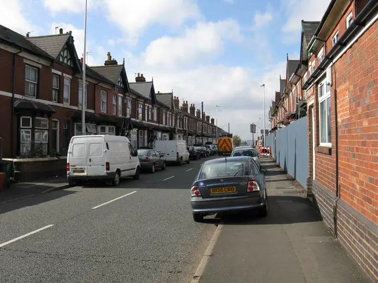

Recent cases in West Bromwich
- The Broadway, January 2025. Around 90 plants were found in a three-bedroom semi. Birmingham Live reported that the house had been sold at auction the month before, and that the growers were thought to have set up before the new owners got the keys.
- Kiniths Way, August 2023. Police called to a reported break-in found up to 250 plants across the property, in rooms fitted out with a hydroponic set-up.
- Charlemont Farm, December 2022. West Bromwich officers seized 160 plants and a man was charged with producing cannabis.
- Walsall Road, February 2021. A police drone picked up heat from the house. Officers found 75 plants and what they called dangerously bypassed electrics.
- Pennyhill Lane, January 2021. More than 40 plants with a hydroponic set-up in a number of rooms. A man was arrested on suspicion of cultivating cannabis and abstracting electricity.
The common threads are bypassed electrics, several rooms in use, and houses that were empty or rarely visited.
Bought at auction and found a grow?
The Broadway case is a warning for anyone buying a house to let. At auction, contracts are usually exchanged when the hammer falls, and the property can sit empty until completion. If you have just bought a house and find a grow:
- Call 101 and do not go in further. Leave and let the police deal with it.
- Call your insurer and your solicitor. Buyers at auction are commonly advised to insure from exchange. Check when your cover started and whether the seller's cover was still in place.
- Photograph the meter and every room once the police release the property, before anything is moved.
- Keep the auction pack and the completion date. When the grow started may matter to who pays.
For future purchases, visit as soon as you can after exchange, change the locks at completion and check the meter on day one.
The housing in West Bromwich
Much of the private rented stock in West Bromwich is Victorian and Edwardian terraces around the town centre and streets like Oak Lane, interwar and post-war semis, and estates such as Charlemont Farm. There are tower blocks too, such as the Kenrick Park flats. For a clean-up, that means:
- Terraces with rear alleys or shared entries. Waste can often come out the back, out of sight. Agree it with neighbours who share the entry, and do not block it.
- Flats in blocks. Communal areas, lifts and fire doors are the freeholder's or landlord's concern. Tell them before any waste moves through shared parts.
- Semis with driveways. A skip on the drive does not need a highway permit; one on the road does.
Licensing in West Bromwich
West Bromwich is in Sandwell, so Sandwell Council's rules apply. Sandwell runs a borough-wide additional HMO licensing scheme for homes shared by three or four people from two or more households, until 30 September 2029, alongside mandatory licensing for larger HMOs. Sandwell does not currently run selective licensing for single-household lets. If a licensed HMO was used for a grow, the repairs have to bring it back to licence standard before anyone moves in: fire doors that close, working alarms, safe electrics and no serious damp.
Which council is it?
B70 and B71 are Sandwell. B43, around Great Barr, is split between Sandwell and its neighbours, so check the council tax bill before you contact anyone about a licence or a skip permit.
Who to contact in West Bromwich
- West Midlands Police: 101, or 999 in an emergency.
- 105 for the meter and the supply.
- Sandwell Council: private housing and additional licensing (linked below).
- Stay Energy Safe to report suspected energy theft anonymously.
Questions landlords ask
Is West Bromwich covered by Sandwell's HMO licensing?
Yes. Sandwell's additional licensing scheme covers the whole borough, including West Bromwich, for homes shared by three or four people from two or more households. Larger HMOs need a mandatory licence.
I bought the house at auction and found a grow before completion. What now?
Call 101, then your solicitor and your insurer. At auction, contracts are usually exchanged on the day, so check when your insurance started. Take photos once police release the property and keep the auction pack.
Do you cover Great Barr?
Yes. B43 is split between councils, so give us the full postcode and we will match a specialist who covers it.
What we can arrange in West Bromwich
Guides for West Bromwich landlords
Other areas: Birmingham, Sutton Coldfield, Solihull, Wolverhampton, Coventry, Walsall, Dudley, Sandwell.